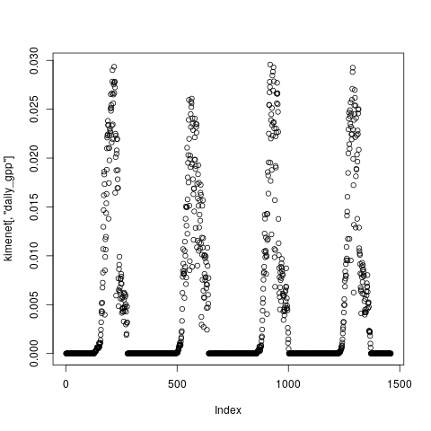
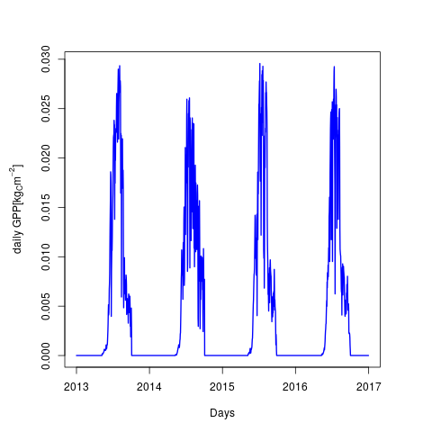

Created: 2018-09-23 Sun 18:24
install.packages("devtools")
devtools::install_github("hollorol/RBBGCMuso/RGBBCMuso")
library(RBBGCMuso) library(ggplot2)
beallitasok <- setupMuso()
kimenet <- calibMuso(settings = beallitasok,skipSpinup=FALSE) kimenet[1:6,1:3]
| tsoil0 | evapotransp | soilwevap |
|---|---|---|
| 3.09415192745925 | 0.214592813613201 | 0.214592813613201 |
| 2.5353521572297 | 0.0115324270940953 | 0.0115324270940953 |
| 1.62868961612864 | 0.0222151624832023 | 0.0222151624832023 |
| 2.34137184558436 | 0.1 | 0.1 |
| 3.66348482398438 | 0.454946076512924 | 0.454946076512924 |
| 5.0076149044176 | 0.14425963841612 | 0.14425963841612 |
plot(kimenet[,"daily_gpp"])

par(mar=c(5,5,4,4)) plot(y=kimenet[,"daily_gpp"], x=as.Date(rownames(kimenet),"%d.%m.%Y"), xlab="Days", ylab = expression(paste("daily GPP[",kg[C],m^-2,"]")), type="l", col="blue", lwd="1.8")
